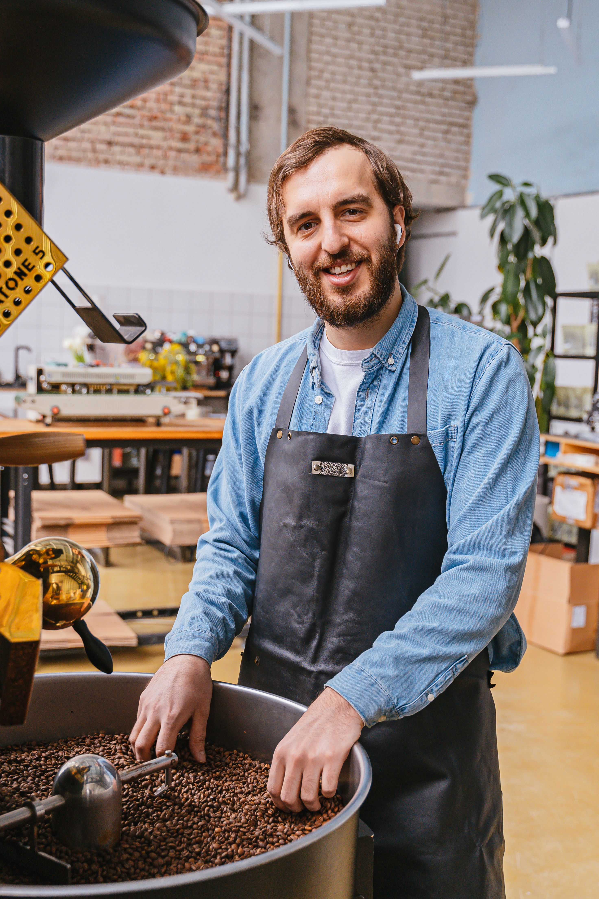
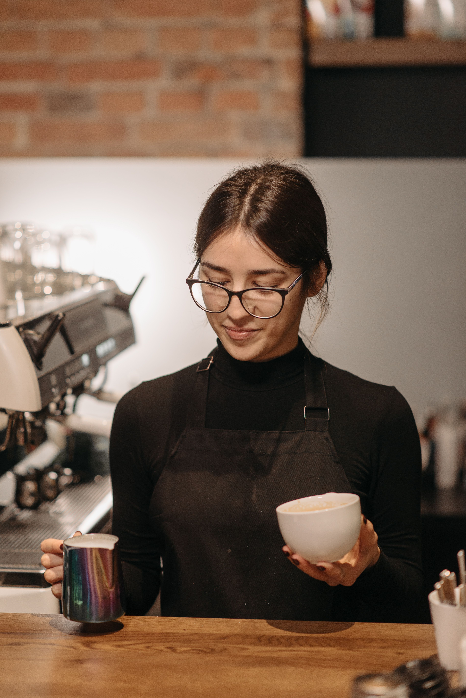

Lucía Paredes
Fundadora
"Un buen café empieza en la finca"
¡De tres mesas a tres sedes, siempre con café de origen¡
"Un buen café empieza en la finca"
"El tueste es escuchar al grano"

"Cada taza es una conversación"

"Pagar justo es parte del sabors"
"Queremos que cada persona que entre se lleve algo más que un café"
| Dato | Valor |
|---|---|
| Sedes | 3 |
| Cooperativas aliadas | 5 |
| Baristas | 12 |
| Años de trayectoria | 8 |